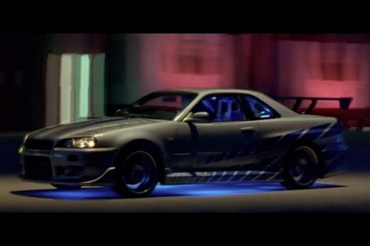
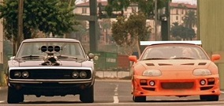
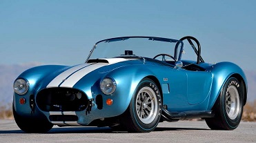
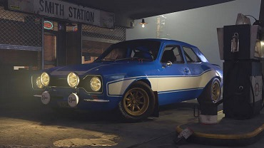

SUJANN K
THIS PAGE IS ABPOUT MY FAVOURITE CARS

Mazda RX-7 FD
The Mazda RX-7 is a front/mid-engine, rear-wheel-drive, rotary engine-powered sports car that was manufactured and marketed by Mazda from 1978 to 2002 across three generations, all of which made use of a compact, lightweight Wankel rotary engine. ... This featured a sequentially turbocharged 13B REW engine
The Mazda RX-7 is a front/mid-engine, rear-wheel-drive, rotary engine-powered sports car that was manufactured and marketed by Mazda from 1978 to 2002 across three generations, all of which made use of a compact, lightweight Wankel rotary engine. ... This featured a sequentially turbocharged 13B REW engine

NISSIAN SKYLINE GTR"R34"
Wheels then carried the name through all the generations of Skyline GT-Rs, most notably the R34 GT-R, "Godzilla Returns" was described as "The best handling car we have ever driven" and further ran a 12.2 quarter mile time and a 4.0 second 0-100 km/h (62 mph) time. ... Production of the Skyline GT-R ended in August 2002.
Wheels then carried the name through all the generations of Skyline GT-Rs, most notably the R34 GT-R, "Godzilla Returns" was described as "The best handling car we have ever driven" and further ran a 12.2 quarter mile time and a 4.0 second 0-100 km/h (62 mph) time. ... Production of the Skyline GT-R ended in August 2002.
SUJANN K

DODGE CHALENGER AND TOYOTA SUPRA
"Dodge Challenger SRT8. ... The SRT8 is essentially a Charger SRT8 sedan with four inches cut from the middle and two fewer doors; it's powered by the same 425-hp, 6.1-liter Hemi V-8 found in other SRT8 models in the Chrysler family; and it looks spectacular in orange"
"The Toyota Supra was designed to be a sporting machine that could compete with many of the major powerhouses of the day, but it wasn’t until the fourth generation Supra bowed in 1993, that the car gained its status as one of the all-time greats."
"Dodge Challenger SRT8. ... The SRT8 is essentially a Charger SRT8 sedan with four inches cut from the middle and two fewer doors; it's powered by the same 425-hp, 6.1-liter Hemi V-8 found in other SRT8 models in the Chrysler family; and it looks spectacular in orange"
"The Toyota Supra was designed to be a sporting machine that could compete with many of the major powerhouses of the day, but it wasn’t until the fourth generation Supra bowed in 1993, that the car gained its status as one of the all-time greats."

FORD SHELBY COBRA
The Shelby Cobra 427 Roadster is arguably the most famous and relevant of all the automotive legends. ... In the early 1960s, Ford endeavored to build a car that would oust the Chevrolet Corvette as the USA's most significant sports car
The Shelby Cobra 427 Roadster is arguably the most famous and relevant of all the automotive legends. ... In the early 1960s, Ford endeavored to build a car that would oust the Chevrolet Corvette as the USA's most significant sports car

FORD ESCORT
The Ford Escort is a small family car which was manufactured by Ford Europe from 1968 to 2004. The Ford Escort name was also applied to several small car types produced in North America by Ford between 1981 and 2004. In 2014, Ford revived the Escort name for a car based on the second-generation Ford Focus sold on the Chinese market.
The Ford Escort is a small family car which was manufactured by Ford Europe from 1968 to 2004. The Ford Escort name was also applied to several small car types produced in North America by Ford between 1981 and 2004. In 2014, Ford revived the Escort name for a car based on the second-generation Ford Focus sold on the Chinese market.